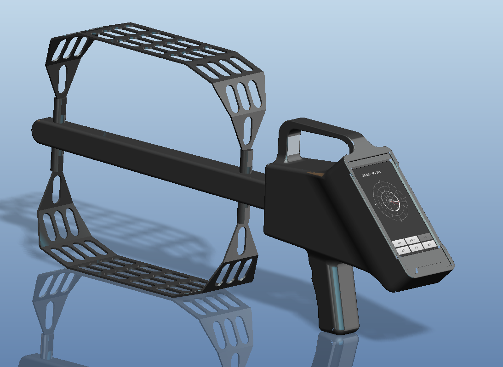
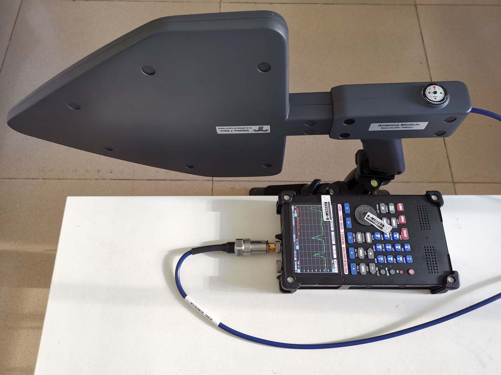

频谱监测测向系统是一款功能多、用途广的空中无线电信号的测量设备,既可以对空间信号实时监控、分析、解调，同时对非法干扰信号进行定位、压制等，作为日常无线电管理和无线电活动保障的工具及日常户外便携测试。


测向系统是一种基于无线电侧向技术的追踪系统,适用于移动平台或固定站对空中无线电信号的测向和频谱监测分析，可作为监测测向一体化的频谱感知设备，广泛应用于各级无线电管理机构的频谱监测网系统建设，作为日常无线电监测和无线电活动保障的工具。能够对无线电信号进行测向定位、测量等，以及安装于无人机上的定向天线,用于接收所述信号发射器发射的无线信号,相位采样电路与所述定向天线连接,用于解析无线信号中的相位数据。也可用于广电、民航、国家安全等机构作为频谱管理、信号监测测向、定位的工具。
©2021– by Joe